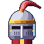
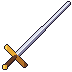

Prenses Cassia kaçırıldı. Genç şövalye Julian, Söğütlü Köyü'nden çıkıp ormanlara, yıkık köylere, fırtınalı denizlere ve kalenin karanlık mahzenlerine uzanan bir yolculuğa başlıyor.
Söğütlü'nün çimenlerinden Kül Adası'nın kızgın çatlaklarına, karlı dağlardan ejderhanın mağarasına.
Kılıç sallamaktan ekmek pişirmeye, gizli patikalardan deniz yolculuklarına kadar koca bir dünya.

Kaçırılan prenses, kara yelkenli gemiler ve tahtın ardındaki sır. Seçimlerin sonra karşına çıkar.

Üç vuruşluk kombolar, tam zamanında mükemmel blok ve karşı saldırı. Boss'lar sabır ister.
Bostanını ek, meyve silkele, değirmende un öğüt, evdeki fırında turta pişir, Fırıncı Ayla'ya sat.
Göletten denize balık defterini doldur, sisli sabahlarda beyaz tilkinin gizli patikasını bul.
Gece ve gündüz, yağmur, kar, sis ve fırtına. Köylüler şemsiye açar, Küçük Mert kartopu atar.
Köyün köpeği Pamuk ya da tekir kedi Tarçın peşine takılır, yerden bulduklarını sana getirir.
Bir sabah yürüyüşünde başlayan pusu, bütün krallığı saran bir komploya açılır.
Haydutların izini Fısıldayan Orman'dan yıkık Ardıç Köyü'ne, kopmuş köprüden fırtınalı bir tepeye ve eski gözcü kulesine kadar sür.
Dalgakıran'la Dişler Boğazı'nı geç, Tuz Bataklığı'nın sisine dal ve dumanlar içindeki Kül Adası'nda Cassia'yı kurtar.
Müttefiklerini topla, gece kalesine gizlice gir, Büyük Saat'in on üçüncü vuruşunu çaldır ve taht salonunda gerçeği yüzleştir.
Hikâye bittikten sonra yer sarsılır. Kalenin altındaki eski ninninin izini karlı dağlara kadar sür, fener taşlarını yak ve bir ejderhayı yeniden uyut.
Bir sorun mu var, bir fikrin mi? Aşağıdaki sorulara bak ya da doğrudan yaz.
Oyun ilerlemen yalnızca telefonunda saklanır. Uygulama arka plana geçince açık oyunun otomatik olarak kaydedilir. Oyunu silersen kayıtlar da silinir.
Ek paket, kostümler, yoldaşlar ve diğer kalıcı ürünler Apple hesabına bağlıdır. Aynı Apple hesabıyla oyunu açtığında Market'ten geri yükleyebilirsin. Altın keseleri bir kez kullanılır, geri yüklenmez.
Oyunda MENÜ → Ayarlar bölümünde "Titreşim" ve "Bildirim" düğmeleriyle açıp kapatabilirsin. Ekran butonlarının boyutu ve görünürlüğü de buradan ayarlanır.
Hayır. Oyun tamamen çevrimdışı oynanır. Yalnızca satın alma ve Game Center başarımları için internet gerekir.
Ek paket ana hikâye bittikten sonra başlar. Taht salonundaki finalden kısa bir süre sonra köyde yer sarsılır ve yeni görev açılır.